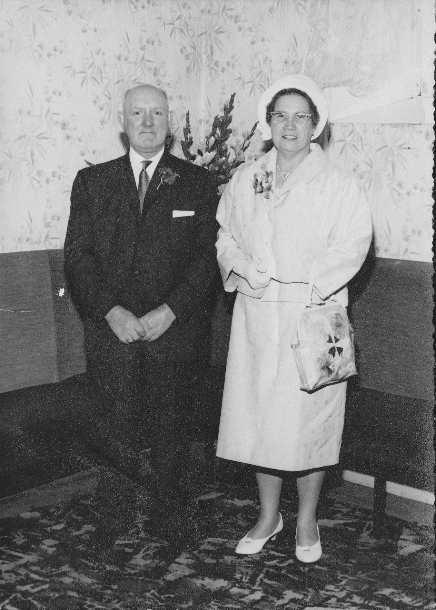

JAMES BRYCE
Born:11-APR-1910
24D Southburn Rd, Coatdyke, Airdrie
Died:17-FEB-1976
at 129 Luing, Airdrie, Scotland.
Occ: Acetylene Welder/Industrial Storeman
Married:Friday 01-JUN-1934 in Congregational Church,Coatbridge
SARAH WILLIAMS
Born:23-SEP-1912
1 Coats Street, Coatbridge
Died:13-OCT-1979
Monklands Hospital, Airdrie.
Address: 129 Luing, Airdrie
Occ: Clothing Factory Machinist
Children:
James(1934)
Walter(1939)
William(1942)
[ Home ]
[ Caskie Home ]
1911 census
24D SouthBurn Road, Coatdyke, Airdrie,Scotland
James Bryce Head Mar 30 B:Coatbridge. Puddler at Iron Works
Christina Wife Mar 30 B:Airdrie
William Son Sin 7 B:Coatbridge. School
Robert Brown Son Sin 5 B:Coatbridge. School
Janet Dau Sin 3 B:Coatbridge.
James Son Sin 1 B:Airdrie.
[ Caskie Home ]